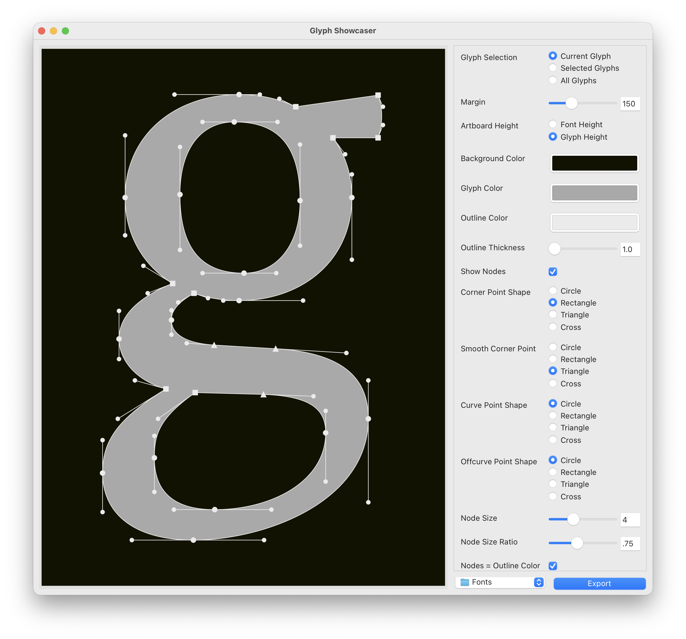
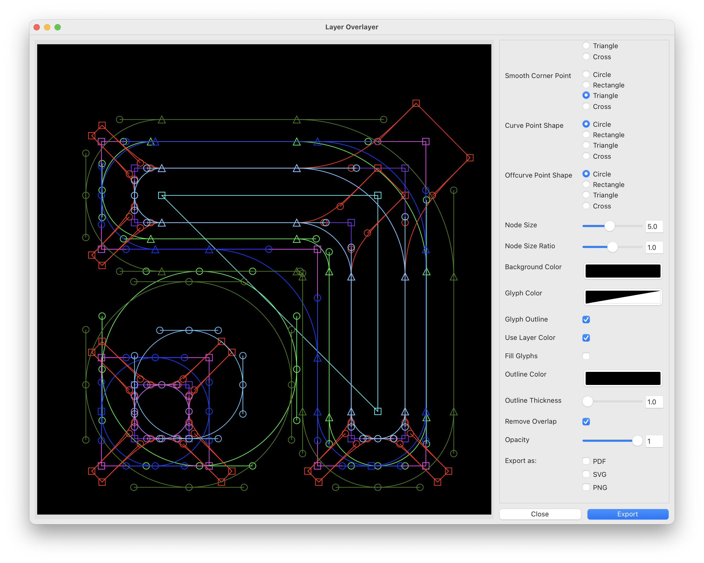
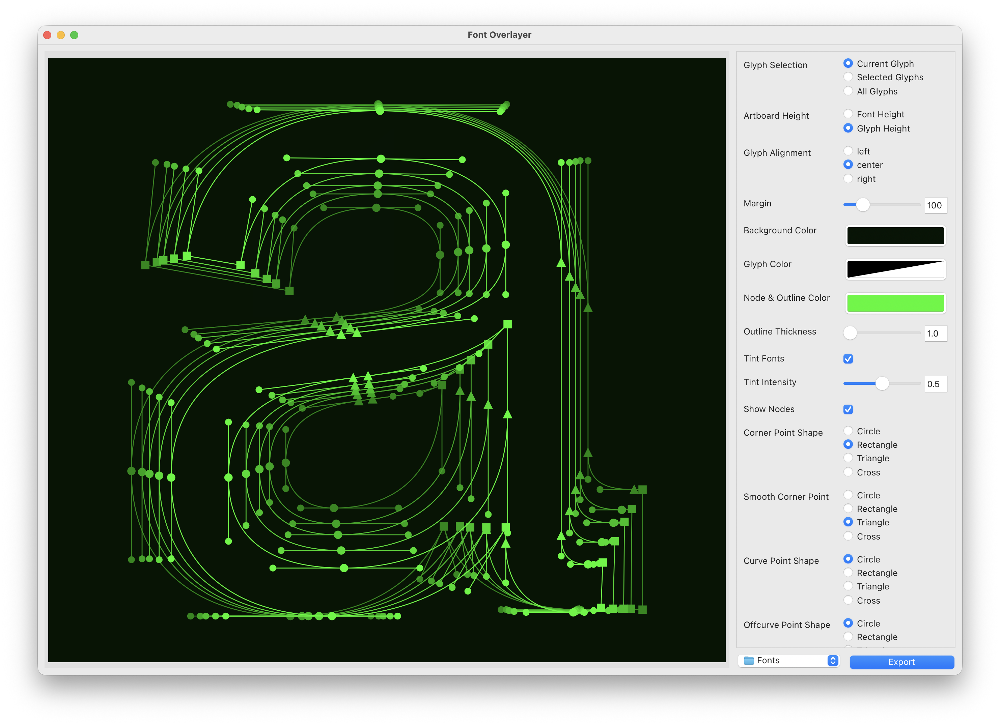

A collection of scripts to generate images of glyphs without leaving RoboFont, or having to resort to screenshots.
The main script, GlyphShowcaser is the initial version of these scripts, and therefore also has the most options, the other two scripts, LayerOverlayer and FontOverlayer are stripped down and modified versions of GlyphShowcaser fulfilling differrent operations (Overlaying the same glyph from different layers of the same font with each other; or overlaying the same glyph of different fonts with each other, respectively.)
Differences in LayerOverlayer and FontOverlayer Controls
Showcase your Drawings!
Tool to showcase your Glyphs and export it as PDF, SVG or PNG. You can change colors, Node Shapes and more!

On the left side of the interface is the preview of the drawing, utilizing DrawBot’s DrawView.
You can zoom in and out with a Trackpad, or cmd + and cmd -
On the right side of the interface are the different controls for the script, here is where you can choose how you want your drawing to look like.
Glyph Selection determines which glyph or glyphs get drawn, can be set to Current Glyph, Selected Glyphs or All Glyphs, depending on the use
Margin adds padding between the glyph and the edges of the artboard
Artboard Height determines the artboard height, can be set to Font Height, calculated from the font’s vertical metrics or Glyph Height, calculated from the glyph’s bounds
Background Color determines the artboard background color
Glyph Color determines the glyph fill color
Outline Color determines the glyph outline color
Hint: To turn the fill or outline off, simply set the color’s opacity to 0, rendering it transparent.
Outline Thickness determines the thickness of all outlines, including those of the nodes
Show Nodes toggle whether you want to draw the Bézier on- and offcurve Points
Node Shapes if the Bézier points get drawn, here you can decide with which shape Corner Point, Smooth Corner Point (smooth connection between a line and a curve, think where the shoulder of ‘n’ connects to the stem), Curve Point and Offcurve Point should be represented. The initial values are the canonical RoboFont values (Build 4.6b).
Node Size determines the Size of the node shapes
Node Size Ratio determines the relationship between on- and offcurve points, default value 1 means they have the same size.
Nodes = Outline Color this toggles if all the node colors should simply follow the glyph’s outline color (as of now, the colorwells themselves will not represent this)
Point and outline colors after choosing with which shape each node should be represented, here you can choose with which color it should be represented, for each node you can select both a fill and an outline color. Handle Bar represents the connecting line between on- and offcurve-points.
Remove Overlap you can turn this off to show the overlaps in your drawing, by default it is turned on.
Display Coordinates with this, every on- and offcurve points coordinates will be displayed underneath the respective point, if you have points close to another, this may become a bit cluttered.
Coordinates Color choose the text color for the coodinates
Display Metrics with this, you can have the font’s vertical metrics displayed with a line in the background. Two small bars on the baseline show the left and right sidebearings.
Metrics Color here you can choose the color of both the vertical metrics lines, as well as their respective labels.
Display Bluezones with this you have the option to display the font’s bluezone values, as set in the font information.
Bluezones Color here you can choose the color for the bluezones.
Infotext Size this controls the textsize of both the coordinates, as well as the vertical metrics labels.
Export as here you can select the formats you want to export your drawings to. Both SVG and PNG create individual files for each glyph. PNGs get exported with 300ppi.
Export Path determines where the images should be exported to, defaults to the folder where your font-file is located.
Hint: in the export process, the script creates a subfolder to collect your drawings, perhaps I could add the option to toggle this behavior on or off.
Export Button exports the drawing to the selected filetypes. Each file is saved with a timestamp (like for example macOS screenshots), as well as the font’s family name, style name, and – if applicable – the individual glyph’s name.
Overlay Layers!
LayerOverlayer is a stripped down and modified version of GlyphShowcaser with the intent of overlaying all of your layers over each other. Whether that might be different versions, alternate drawings or something else, you can stack it and export it as a PDF, SVG or PNG.

Overlay Fonts!
FontOverlayer is a modified version of GlyphShowcaser, using the LayerOverlayer logic, overlaying the currently open font files with each other. These could be the styles of one Family or inherently different fonts, you can stack it and export it as a PDF, SVG or PNG.

LayerOverlayer and FontOverlayer are stripped down variants of GlyphShowcaser, the controls they share with GlyphShowcaser function the same, and in addition they offer slightly different controls.
Nodes and Outline always share the same color, as a more granular control would make things more complicated in my opinion.
Use Layer Colors with these two checkboxes, you can choose to use the respective layer color (as set in RoboFont) for both the fill and outline; if for example you follow a specific coloring scheme for your layers, you can have it represented here.
Opacity you can set the opacity for the layers, if you want to show for example how two versions of a glyph differ.
Tint Fonts you can choose to tint every font in a different shade and set the intensity of difference in tint.
The scripts requires the Drawbot extension for RoboFont.
Just van Rossum, Erik van Blokland, Frederik Berlaen for DrawBot
Frederik Berlaen for the DrawBot extension for RoboFont
Tal Leming for Vanilla